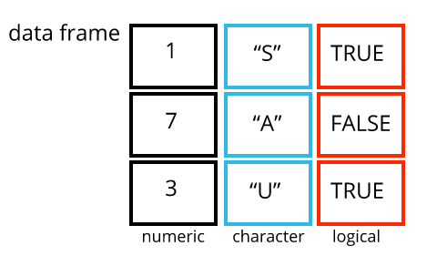

上原ゼミR講座
第一回: RとRStudio入門
2023-04-28
なぜコードを使うのか？
- 解析を再現可能にするため
再現性とは？
- 他の人（将来の自分を含めて）があなたの解析を再度行って、同じ結果を得ることができること
なぜR?
- タダ
- 柔軟性
- 広く生態学に使われている
- コミュニティー
RとRStudio
- Rとは「R Project for Statistical Computing」という組織が提供しているオープンソース（タダの）プログラミング言語

RとRStudio
- RStudioとはPosit社が提供しているIDE（Integrated Development Environment）
- 基本的な機能はタダ
- 会社向けの機能は有料
- Rのコードを書く・実行する最適なソフト

資料
R for Data Science
- 英語版はオンラインで無料 https://r4ds.had.co.nz/
- 日本語版はアマゾンなどから

ライブコーディングとは？
インストラクターが打っていると同じコードを同時に自分のパソコンで打っていく
インストラクターが参加者の理解を確認する（「〜が出来ましたか？」）
zoomの「反応」をクリック→「はい」、「いいえ」

フィードバック
毎回簡単なアンケートがあります。次の講座をより良くするための参考とさせていただきます。ご回答お願いします。
第二回: 関数と
パッケージ
2023-05-02
自己紹介
- 学年
- Rで何をしたい？（決まっていなくても、ボヤッとしてもいい）
フィードバック
（フィードバックは匿名です）
とても分かりやすかったです。Rを使う意義を再確認できました。
- ありがとうございます！
フィードバック
前のスクリーンの文字が少し小さくて読めなかった
- 拡大しました。これでいかがでしょうか？
environmentのスペースをどういうときに使うのか気になった。
- 現在のRセッションに存在しているデータをリストアップする
フィードバック
コンソールとエディタのどちらに文字を打てばいいか忘れてしまっていて困った
- どちらも使う場合がありますが、エディタの方が多いでしょう
フィードバック
Console内の実行履歴が保存できなかった
- 「Environment」の隣に「History」タブがあって、「History」タブから履歴を見たり保存したりすることが出来る。でもHistoryを使うよりもスクリプトを書くのがおすすめ。
フィードバック
エラーが出た際の対応[をどうすれば良いのか？]
- ガッカリしないでください。まずはエラーメッセージを丁寧に読むこと、自分の打ったコマンドにミスがあったかどうかを確認すること。次に助けを求める（また後でこれについて説明します）。
前回のおさらい
- R（あるいは他のプログラミング言語）を使う目的・
理由は解析を再現可能にすること - RとRStudioはそれぞれ別なソフト
- RStudioを使うのにRが必須けど、Rは単独で使える
- RStudioでは、直接Rと話もできるし、コードを記録することもできる
RStudioのデフォルト設定を
変えましょう
前のセッションのデータが残っていることは再現の観点
からダメ！
Tools → Global Options → General → Workspace
- “Restore .RData into workspace at startup” → 外す
- “Save workspace to .RData on exit:” → “Never”
RStudioのデフォルト設定を
変えましょう
前のセッションのデータが残っていることは再現の観点
からダメ！

RStudioのプロジェクト管理
RStudioの「プロジェクト」機能（.Rprojファイル）はデータ解析の整理に役立つ
いつも決まったディレクトリ構造を使うと楽になる
RStudioのプロジェクト管理
data_raw/- 生データを置く場所。生データは絶対にいじらない（読み込み専用）
data/- コードによって整えられたデータを置く場所。使い捨てのつもりで良い。
results/- コードによって得られた結果を置く場所。これも使い捨て。
code/- コードを置く場所。ベストプラクティスはgitでバージョン管理を施す。
データとコードがあればいつでも結果は得られる（再現できる）
コメントの書き方
#で書く（Rはこの後を無視する）
自分へのメモとして使う
いっぱい書きましょう
変数の名前について
- 変数名には、文字、数字、下線、ピリオドを含むことができる。 数から始まることはできず、空白を含むことはできない。 長い変数名のつけ方は様々。
例えば、
- ピリオドを.単語の.間に入れる
- 下線を_単語の_間に入れる （おすすめ）
- 単語の始まりを大文字にする（camelCaseToSeparateWords）
変数の名前について
Rは大文字・小文字の違いを意識するから、混ぜない方がわかりやすい
代入の演算子
代入の演算子として、=を使うこともできる：
しかし、これはRユーザーでは、あまり使われていない。<-の方が意味がクリア。
環境を管理する
ls()- 環境に入っているものをリストアップする
rm()- 環境から何かを消す
チャレンジ
次のプログラムのそれぞれの宣言の後、それぞれの変数の値は何になるでしょうか？
次に、massとageを比較するコマンドを書いて下さい。 massはageよりも大きいでしょうか？
最後に、massとageの変数を消去し、作業環境をきれいにしよう
関数とは
何かの値（インプット）を受けて、処理して、計算結果（アウトプット）を返すもの

関数とは？
関数の書き方：
- 関数名(引数)
関数の例：print()、paste()
パッケージとは
関数（とデータ）の集め
何か具体的な解析をしたい時に使う
- たとえば、Shannon指数
パッケージとは
- たとえば、Shannon指数
パッケージの管理
install.packages("packagename")- パッケージのインストール（一回でいい）
library(packagename)- パッケージを使える状態にする（毎回）
分からなくなった時の対応
help()- 情報は正しいけど、初心者に優しくないことが多い
- ググって見る
- StackOverflow
- GitHub
- ChatGPT先生に聞く
- 嘘をつくことあり。要注意。
- コミュニティーに聞く
- TokyoR, AsiaRなど
アンケート
https://forms.gle/5jEFkqztS89TkC4D8
ご回答のご協力をどうぞよろしくお願いします
第三回: データ
2023-05-12
tokyoR
slackの参加方法：https://github.com/TokyoR/r-wakalangに
行って、「参加」リンクをクリック
tokyoR
#r_beginnersチャンネルがおすすめ
フィードバック
今までコピペをして、理解できていなかったコマンドを理解する事ができた
- よかったです！コピペではある程度出来るし（自分もよくやっている）けど、基本が分からないと中々うまく行かない。chatGPTもやっぱりそう。
フィードバック
ホットキーの操作が上手くいかずコマンドを打ち間違えることが多かった。
- 他にもあるけど、今覚えていただきたいのは「実行する」（mac: ⌘⏎、windows: ctrl⏎）
- 実行したい行の中にカーサーをおいて、あるいは選択してから打つ
フィードバック
関数ls（）の意味は、関数rm（）で消した変数を復活させるという意味であってますか。
違います。
ls()は現在環境にある物を表示する（list）コマンド。rm()で何かを消したら、それを取り戻すことが
できない（リナックスのrmと同様に）
フィードバック
shannon のあたりからコードを入れても同じように出てこないことがあった
- よかったら後で個別に見ましょう
フィードバック
コンソールとスクリプト画面の使い方について最初説明がありましたが、どちらを先に書くのが自分にあっているのか、試しながら探していきます。
- やっているうちに慣れてくるけど、スクリプトはコードを記録する（後でまた同じように出来るために取っておく）ところで、コンソールは気軽に何かを確認したい時に使う
前回のおさらい
- 「関数」とは何かの値を受けて、処理して、計算結果を返すもの
- 「パッケージ」とは、関数をまとめたもの
tidyverse
tidyverseとは、データの整理・基本的な解析を行うためのパケージの集まり（「パケージ郡」）。これからよく使うことになる。個別にインストール・ロードする必要はなく、一気にできるので楽。
インストールするのにちょっと時間かかるので今のうちにやりましょう。
データタイプ
- numeric（数字）
- Rでは「double」と呼ぶこともある
データタイプ
- character（文字列）
- 文字列を指定する際、引用符が必要
- アポストロフィーも使えるけど、必要がなければ
おすすめしない
- アポストロフィーも使えるけど、必要がなければ
データタイプ
- character（文字列）
- 文字列を指定する際、引用符が必要
- アポストロフィーも使えるけど、必要がなければ
おすすめしない
- アポストロフィーも使えるけど、必要がなければ
データタイプ
- logical（論理型）
データタイプ
- logical（論理型）
>（より大きい）,<（より小さい）,==（等しい）,!=（等しくない）、||（もしくは）で比較ができる=ではなく、==
ベクトル
- データを複数含むもの
- データは全部同じタイプじゃないといけない
- ベクトルを作る関数は
c()- “concatenate”（くっつける）の略
数字ベクトルを作ってみましょう
ベクトル
ベクトルには名前を持つことができる
データの部分集合化
「部分集合化」（subsetting）とは、ベクトルの中から
欲しいところだけを切り取ること
[]で欲しいところを指定する- Rは（０ではなく）１から数える
データの部分集合化
-（マイナス）で欲しくないところを切り落とす
データの部分集合化
名前で指定することもできる
データの部分集合化
ロジカルベクトルで指定することもできる
チャレンジ
以下のうち、agesから２つ目の数値だけを抜き出す事が
できるのはどれでしょう？
ages[ages > 15]
ages[c(FALSE, TRUE, FALSE)]
ages["2"]
ages[ages < 25]
ages[-2]データフレームについて
「データフレーム」とは表形式データ（エクセルで扱うようなデータ）

データフレームについて
エクセルとの大きな違い：各列は同じデータ型を持たなければならない
tidyverseパッケージでは、「tibble」と呼ばれる
データフレームの読み込み
- tidyverseの
read_csv()（CSVファイル）あるいはread_tsv()（TSVファイル）がおすすめ.xlsxファイルの読み込みにはxlsxパッケージのread_excel()がおすすめ
- このデータをダウンロードして、
data_raw/に保存してください：https://www.dropbox.com/s/fdirlsnxlzy53qq/gapminder.csv?dl=0
データフレームの読み込み
read_csv()でデータを読み込む
# A tibble: 1,704 × 6
country continent year lifeExp pop gdpPercap
<chr> <chr> <dbl> <dbl> <dbl> <dbl>
1 Afghanistan Asia 1952 28.8 8425333 779.
2 Afghanistan Asia 1957 30.3 9240934 821.
3 Afghanistan Asia 1962 32.0 10267083 853.
4 Afghanistan Asia 1967 34.0 11537966 836.
5 Afghanistan Asia 1972 36.1 13079460 740.
6 Afghanistan Asia 1977 38.4 14880372 786.
7 Afghanistan Asia 1982 39.9 12881816 978.
8 Afghanistan Asia 1987 40.8 13867957 852.
9 Afghanistan Asia 1992 41.7 16317921 649.
10 Afghanistan Asia 1997 41.8 22227415 635.
# ℹ 1,694 more rowsチャレンジ
gapminderを打つと、このデータについていくつかの事項が表示される。
- データの大きさはどれくらい（行と列はいくつある）？
- それぞれの行のデータの種類（データタイプ）は
どうなっている？
データフレームの全体をつかむ
summary(data)で全部の値の平均などを集計する
country continent year lifeExp
Length:1704 Length:1704 Min. :1952 Min. :23.60
Class :character Class :character 1st Qu.:1966 1st Qu.:48.20
Mode :character Mode :character Median :1980 Median :60.71
Mean :1980 Mean :59.47
3rd Qu.:1993 3rd Qu.:70.85
Max. :2007 Max. :82.60
pop gdpPercap
Min. :6.001e+04 Min. : 241.2
1st Qu.:2.794e+06 1st Qu.: 1202.1
Median :7.024e+06 Median : 3531.8
Mean :2.960e+07 Mean : 7215.3
3rd Qu.:1.959e+07 3rd Qu.: 9325.5
Max. :1.319e+09 Max. :113523.1 列の順を並び変える
arrange(data, column)
# A tibble: 1,704 × 6
country continent year lifeExp pop gdpPercap
<chr> <chr> <dbl> <dbl> <dbl> <dbl>
1 Sao Tome and Principe Africa 1952 46.5 60011 880.
2 Sao Tome and Principe Africa 1957 48.9 61325 861.
3 Djibouti Africa 1952 34.8 63149 2670.
4 Sao Tome and Principe Africa 1962 51.9 65345 1072.
5 Sao Tome and Principe Africa 1967 54.4 70787 1385.
6 Djibouti Africa 1957 37.3 71851 2865.
7 Sao Tome and Principe Africa 1972 56.5 76595 1533.
8 Sao Tome and Principe Africa 1977 58.6 86796 1738.
9 Djibouti Africa 1962 39.7 89898 3021.
10 Sao Tome and Principe Africa 1982 60.4 98593 1890.
# ℹ 1,694 more rows列の順を並び変える
arrange(data, column1, column2)で複数の行によって並び変える
# A tibble: 1,704 × 6
country continent year lifeExp pop gdpPercap
<chr> <chr> <dbl> <dbl> <dbl> <dbl>
1 Afghanistan Asia 1952 28.8 8425333 779.
2 Albania Europe 1952 55.2 1282697 1601.
3 Algeria Africa 1952 43.1 9279525 2449.
4 Angola Africa 1952 30.0 4232095 3521.
5 Argentina Americas 1952 62.5 17876956 5911.
6 Australia Oceania 1952 69.1 8691212 10040.
7 Austria Europe 1952 66.8 6927772 6137.
8 Bahrain Asia 1952 50.9 120447 9867.
9 Bangladesh Asia 1952 37.5 46886859 684.
10 Belgium Europe 1952 68 8730405 8343.
# ℹ 1,694 more rows列の順を並び変える
- デフォルトで小さい順（あるいは、Aの方）から並ぶ
- 大きい方（あるいは、Zの方）から並べたい時は
desc()を使う
# A tibble: 1,704 × 6
country continent year lifeExp pop gdpPercap
<chr> <chr> <dbl> <dbl> <dbl> <dbl>
1 Zimbabwe Africa 1952 48.5 3080907 407.
2 Zambia Africa 1952 42.0 2672000 1147.
3 Yemen, Rep. Asia 1952 32.5 4963829 782.
4 West Bank and Gaza Asia 1952 43.2 1030585 1516.
5 Vietnam Asia 1952 40.4 26246839 605.
6 Venezuela Americas 1952 55.1 5439568 7690.
7 Uruguay Americas 1952 66.1 2252965 5717.
8 United States Americas 1952 68.4 157553000 13990.
9 United Kingdom Europe 1952 69.2 50430000 9980.
10 Uganda Africa 1952 40.0 5824797 735.
# ℹ 1,694 more rows行を抜き出す
select(data, column)で行を抜き出す
行を抜き出す
select(data, column)で行を抜き出す
# A tibble: 1,704 × 3
year country pop
<dbl> <chr> <dbl>
1 1952 Afghanistan 8425333
2 1957 Afghanistan 9240934
3 1962 Afghanistan 10267083
4 1967 Afghanistan 11537966
5 1972 Afghanistan 13079460
6 1977 Afghanistan 14880372
7 1982 Afghanistan 12881816
8 1987 Afghanistan 13867957
9 1992 Afghanistan 16317921
10 1997 Afghanistan 22227415
# ℹ 1,694 more rows行を抜き出す
- 数字でも指定できる
行を抜き出す
:で行の範囲を指定できる
# A tibble: 1,704 × 4
country continent year lifeExp
<chr> <chr> <dbl> <dbl>
1 Afghanistan Asia 1952 28.8
2 Afghanistan Asia 1957 30.3
3 Afghanistan Asia 1962 32.0
4 Afghanistan Asia 1967 34.0
5 Afghanistan Asia 1972 36.1
6 Afghanistan Asia 1977 38.4
7 Afghanistan Asia 1982 39.9
8 Afghanistan Asia 1987 40.8
9 Afghanistan Asia 1992 41.7
10 Afghanistan Asia 1997 41.8
# ℹ 1,694 more rows行を抜き出す
:で行の範囲を指定できる
# A tibble: 1,704 × 5
country continent year lifeExp pop
<chr> <chr> <dbl> <dbl> <dbl>
1 Afghanistan Asia 1952 28.8 8425333
2 Afghanistan Asia 1957 30.3 9240934
3 Afghanistan Asia 1962 32.0 10267083
4 Afghanistan Asia 1967 34.0 11537966
5 Afghanistan Asia 1972 36.1 13079460
6 Afghanistan Asia 1977 38.4 14880372
7 Afghanistan Asia 1982 39.9 12881816
8 Afghanistan Asia 1987 40.8 13867957
9 Afghanistan Asia 1992 41.7 16317921
10 Afghanistan Asia 1997 41.8 22227415
# ℹ 1,694 more rows列を絞る
filter()である条件に合っている列だけに絞る
# A tibble: 12 × 6
country continent year lifeExp pop gdpPercap
<chr> <chr> <dbl> <dbl> <dbl> <dbl>
1 Brazil Americas 1952 50.9 56602560 2109.
2 Brazil Americas 1957 53.3 65551171 2487.
3 Brazil Americas 1962 55.7 76039390 3337.
4 Brazil Americas 1967 57.6 88049823 3430.
5 Brazil Americas 1972 59.5 100840058 4986.
6 Brazil Americas 1977 61.5 114313951 6660.
7 Brazil Americas 1982 63.3 128962939 7031.
8 Brazil Americas 1987 65.2 142938076 7807.
9 Brazil Americas 1992 67.1 155975974 6950.
10 Brazil Americas 1997 69.4 168546719 7958.
11 Brazil Americas 2002 71.0 179914212 8131.
12 Brazil Americas 2007 72.4 190010647 9066.列を絞る
filter()である条件に合っている列だけに絞る
# A tibble: 142 × 6
country continent year lifeExp pop gdpPercap
<chr> <chr> <dbl> <dbl> <dbl> <dbl>
1 Afghanistan Asia 2007 43.8 31889923 975.
2 Albania Europe 2007 76.4 3600523 5937.
3 Algeria Africa 2007 72.3 33333216 6223.
4 Angola Africa 2007 42.7 12420476 4797.
5 Argentina Americas 2007 75.3 40301927 12779.
6 Australia Oceania 2007 81.2 20434176 34435.
7 Austria Europe 2007 79.8 8199783 36126.
8 Bahrain Asia 2007 75.6 708573 29796.
9 Bangladesh Asia 2007 64.1 150448339 1391.
10 Belgium Europe 2007 79.4 10392226 33693.
# ℹ 132 more rowsチャレンジ
gapminderからアジアのみの国名・年・人口のデータを切り出して、別のcsvファイルとして保存して下さい
- ヒント：
write_csv()でcsvファイルを保存することができる
アンケート
https://forms.gle/ZLiiS9mVy8FJ2yBR6
ご回答のご協力をどうぞよろしくお願いします
第四回: データ（後編）と図の作成
2023-05-19
フィードバック
データの保存場所に苦労した
R（そして、他のプログラミング言語も）は現在いる場所（「作業ディレクトリ」）から物を探す。自分の頭の中の「今いる場所」とRの作業ディレクトリが違うと上手くいかない。
作業ディレクトリの確認・設定
getwd()で作業ディレクトリを確認するsetwd()で作業ディレクトリを設定する
おすすめ：RStudioのプロジェクト機能を使って、.RprojファイルをダブルクリックすることでRStudioを開く。
そうすれば、作業ディレクトリがプロジェクトのフォルダーになるので、わかりやすい。
フィードバック
上記のコードでは、それぞれの年齢に名前を紐づけたという認識であってますか？
そうです。ただし、ベクトルの要素に名前をつけることはそんなに多くない。
フィードバック
それよりも、データフレームを使うことが多い：
name age
1 joel 39
2 mary 18
3 bob 70data.frame()あるいはtibble()でデータフレームを作る
フィードバック
bracket が2つ以上になるとc()がいるのはなぜでしょうか。
[]の中の数字が二つ以上のことですよね？何故なら、[]の中はベクトルではないといけないからです。
（Rで3は長さ＝１のベクトルです）
前回のおさらい
データの種類は三つある：数字、文字、ロジカル
ベクトルとは、同じ種類のデータが複数入っているもの
c()でベクトルを作る[]で欲しいところだけを抜き出す
データフレームとは、エクセルで扱うような列と行からなるデータのこと
read_csv()で読み込むwrite_csv()で書き出す
前回のおさらい
- データフレームを扱う
tidyverseの関数が色々あるselect(): 行を絞るfilter(): 列を絞るarrange(): 列を並び替える
「データラングリング」の続き
「wrangle」= （元々は牛などを）思う通りに整理すること

データを変換する
mutate()である行のデータを変換することができる。
例えば、人口を万人単位に変える：
# A tibble: 1,704 × 6
country continent year lifeExp pop gdpPercap
<chr> <chr> <dbl> <dbl> <dbl> <dbl>
1 Afghanistan Asia 1952 28.8 843. 779.
2 Afghanistan Asia 1957 30.3 924. 821.
3 Afghanistan Asia 1962 32.0 1027. 853.
4 Afghanistan Asia 1967 34.0 1154. 836.
5 Afghanistan Asia 1972 36.1 1308. 740.
6 Afghanistan Asia 1977 38.4 1488. 786.
7 Afghanistan Asia 1982 39.9 1288. 978.
8 Afghanistan Asia 1987 40.8 1387. 852.
9 Afghanistan Asia 1992 41.7 1632. 649.
10 Afghanistan Asia 1997 41.8 2223. 635.
# ℹ 1,694 more rowsデータを変換する
既にある行の名前を使えばその行は上書きされる。新しい名前を使ったら、新しい行が加えられる：
# A tibble: 1,704 × 7
country continent year lifeExp pop gdpPercap pop_man
<chr> <chr> <dbl> <dbl> <dbl> <dbl> <dbl>
1 Afghanistan Asia 1952 28.8 8425333 779. 843.
2 Afghanistan Asia 1957 30.3 9240934 821. 924.
3 Afghanistan Asia 1962 32.0 10267083 853. 1027.
4 Afghanistan Asia 1967 34.0 11537966 836. 1154.
5 Afghanistan Asia 1972 36.1 13079460 740. 1308.
6 Afghanistan Asia 1977 38.4 14880372 786. 1488.
7 Afghanistan Asia 1982 39.9 12881816 978. 1288.
8 Afghanistan Asia 1987 40.8 13867957 852. 1387.
9 Afghanistan Asia 1992 41.7 16317921 649. 1632.
10 Afghanistan Asia 1997 41.8 22227415 635. 2223.
# ℹ 1,694 more rowsパイプについて
前回では、複数の処理をする際、それぞれのアウトプットに名前をつけていました：
gapminderからアジアのみの国名・年・人口のデータを切り出して、別のcsvファイルとして保存して下さい
でもこれは処理が多くなるとややこしくなってくる。
もっといい方法がある：パイプ
パイプについて
「パイプ」とは、左の関数のアウトプットを右の関数の
インプットに渡すもの
%>%（あるいは|>）と書く。
パイプについて
パイプについて
先の作業はパイプを使うとこのようにできる：
# A tibble: 396 × 3
country year pop
<chr> <dbl> <dbl>
1 Afghanistan 1952 8425333
2 Afghanistan 1957 9240934
3 Afghanistan 1962 10267083
4 Afghanistan 1967 11537966
5 Afghanistan 1972 13079460
6 Afghanistan 1977 14880372
7 Afghanistan 1982 12881816
8 Afghanistan 1987 13867957
9 Afghanistan 1992 16317921
10 Afghanistan 1997 22227415
# ℹ 386 more rowsパイプについて
複数の処理があると便利なことが分かる：
# A tibble: 396 × 3
country year pop
<chr> <dbl> <dbl>
1 Bahrain 1952 120447
2 Bahrain 1957 138655
3 Kuwait 1952 160000
4 Bahrain 1962 171863
5 Bahrain 1967 202182
6 Kuwait 1957 212846
7 Bahrain 1972 230800
8 Bahrain 1977 297410
9 Kuwait 1962 358266
10 Bahrain 1982 377967
# ℹ 386 more rowsパイプについて
あるいは
# A tibble: 396 × 3
country year pop
<chr> <dbl> <dbl>
1 Bahrain 1952 120447
2 Bahrain 1957 138655
3 Kuwait 1952 160000
4 Bahrain 1962 171863
5 Bahrain 1967 202182
6 Kuwait 1957 212846
7 Bahrain 1972 230800
8 Bahrain 1977 297410
9 Kuwait 1962 358266
10 Bahrain 1982 377967
# ℹ 386 more rowsチャレンジ
gapminderから日本のデータに絞って、国内総生産を
計算してください
（今のデータでは一人当たりの値です）
データの集計
summarize()でデータの集計ができる：
グループ化
しかし、全体の平均だけを計算してもあまり意味はない。
それよりも、何か毎にデータの集計を行いたい方が多い。
グループ化
何か毎に処理を施すにはgroup_by()関数を使う。
例えば、国ごと。まずはデータのグループを指定する：
# A tibble: 1,704 × 6
# Groups: country [142]
country continent year lifeExp pop gdpPercap
<chr> <chr> <dbl> <dbl> <dbl> <dbl>
1 Afghanistan Asia 1952 28.8 8425333 779.
2 Afghanistan Asia 1957 30.3 9240934 821.
3 Afghanistan Asia 1962 32.0 10267083 853.
4 Afghanistan Asia 1967 34.0 11537966 836.
5 Afghanistan Asia 1972 36.1 13079460 740.
6 Afghanistan Asia 1977 38.4 14880372 786.
7 Afghanistan Asia 1982 39.9 12881816 978.
8 Afghanistan Asia 1987 40.8 13867957 852.
9 Afghanistan Asia 1992 41.7 16317921 649.
10 Afghanistan Asia 1997 41.8 22227415 635.
# ℹ 1,694 more rowsグループ化
次に、集計する：
# A tibble: 142 × 2
country mean_pop
<chr> <dbl>
1 Afghanistan 15823715.
2 Albania 2580249.
3 Algeria 19875406.
4 Angola 7309390.
5 Argentina 28602240.
6 Australia 14649312.
7 Austria 7583298.
8 Bahrain 373913.
9 Bangladesh 90755395.
10 Belgium 9725119.
# ℹ 132 more rowsグループ化
グループ毎の計算が終わったら、ungroup()でグループの解除をする必要がある場合がある。
# A tibble: 1,704 × 4
country pop mean_pop_country mean_pop_total
<chr> <dbl> <dbl> <dbl>
1 Afghanistan 8425333 15823715. 29601212.
2 Afghanistan 9240934 15823715. 29601212.
3 Afghanistan 10267083 15823715. 29601212.
4 Afghanistan 11537966 15823715. 29601212.
5 Afghanistan 13079460 15823715. 29601212.
6 Afghanistan 14880372 15823715. 29601212.
# ℹ 1,698 more rows図の書き方
Rで図を書くのに二つの方法がある：基本R（他のパッケージを使わない）とggplot2パッケージによる書き方
ggplot2は操作の一貫性があり、（割と）使いやすいのでおすすめです
ggplot2

ggplot2

ggplot2
まずはggplot()関数を使います。これでプロットのスペースが用意される（だけ）

ggplot2
次にどのようなデータを使いたいのか指定する

これだけではどのようなプロットを作りたいのか教えてないのでやはりまだ何も出てこない
ggplot2
次にどのようにデータを表したいのか教える。例えば年を横（x）軸に、人口を縦（y）軸にして、形は点（ポイント）にする:
やっと見えてきました！
ggplot2
違う形を指定することもできる：
だが、これではあまり意味がないですね。
ggplot2
もうちょっとデータを絞ってからやるとgeom_line()の意味が分かるでしょう：
ggplot2
もう一回ポイントに戻してみましょう：
ggplot2
geom_point()とgeom_lineを両方使ってもいい：
+を使うと図の要素を重ねていく
チャレンジ
以下のプロットを作ってください：
ヒント：色はcolorで、大きさはsizeで指定できる
アンケート
https://forms.gle/ESy6XPXUR2mC9rB3A
ご回答のご協力をどうぞよろしくお願いします